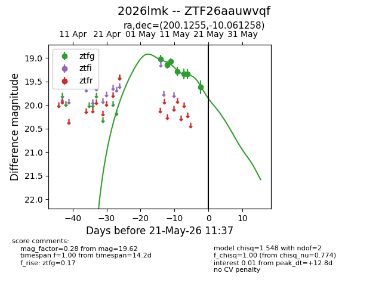
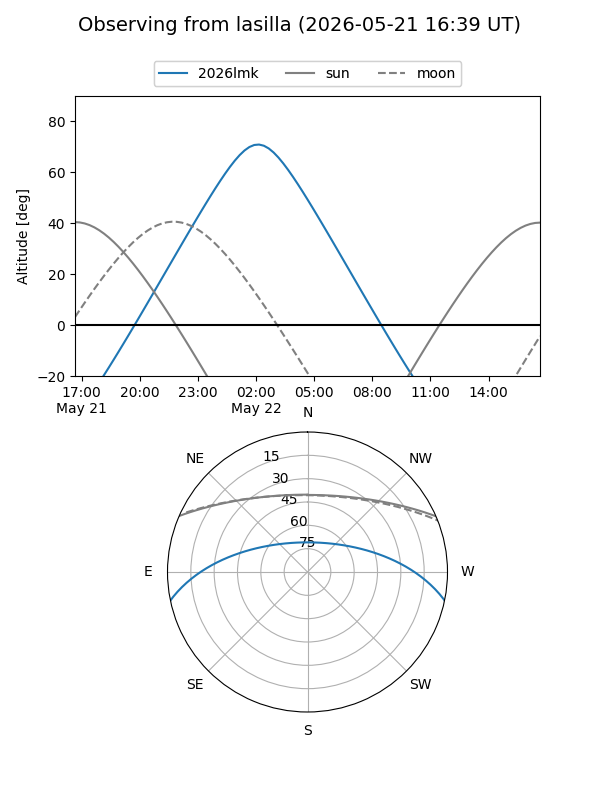
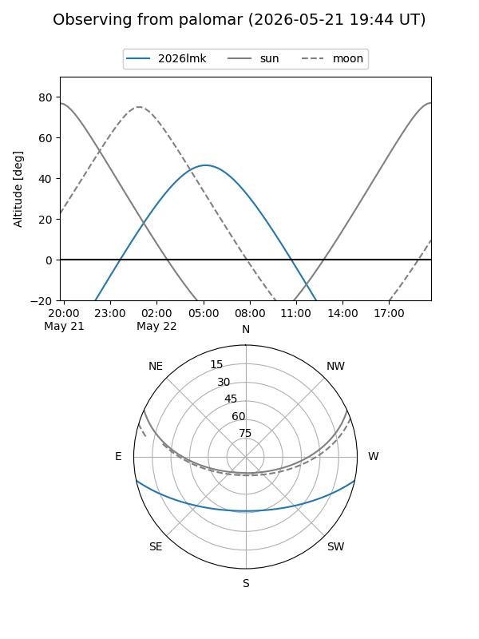
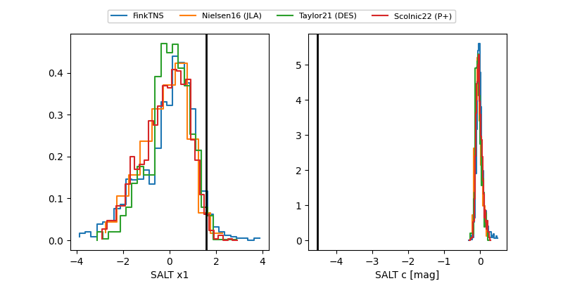

2026lmk
Target 2026lmk at 2026-05-21 11:40
Aliases and brokers:
lsst-FINK: link
lsst-Lasair: link
lsst-ALeRCE: link
ztf-FINK: link
ztf-Lasair: link
ztf-ALeRCE: link
TNS: link
YSE: link
alt names
ZTF26aauwvqf (ztf,fink_ztf)
2026lmk (tns,yse)
Coordinates:
equatorial (ra, dec) = 200.1255,-10.06126
equatorial (HMS+DMS) = 13:20:30.11,-10:03:40.53
galactic (l, b) = (314.6412,+52.14849)
Flags:
Photometry:
last ztfg=19.62
7 ztfg detections
Lightcurve

Visibility


Additional plots
